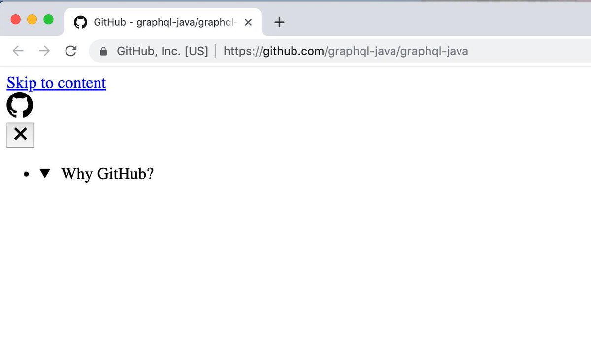

  	<div class="flex-wrap">
      
  	  <article class="tweet  " id="main">
  	    <p class="full_text">
  	      I know the network problem is my own, but this result seemed particularly on point <div class="gallery"><ul><li><a href="../../tweets_media/1135848499952721920-D8NYLMzXUAAtvv2.jpg"></a></li></ul></div>
  	    </p>
  	    <p class="created_at">
  	      6/4/2019, 2:59:20 AM
  	    </p>
  	    <p class="favorite_count">Favs: 5</p>
  	    <p class="retweet_count">Retweets: 0</p>
  	    <a class="permalink" href="../1135848499952721920">link</a>
  	  </article>

  	</div>
  </div>
